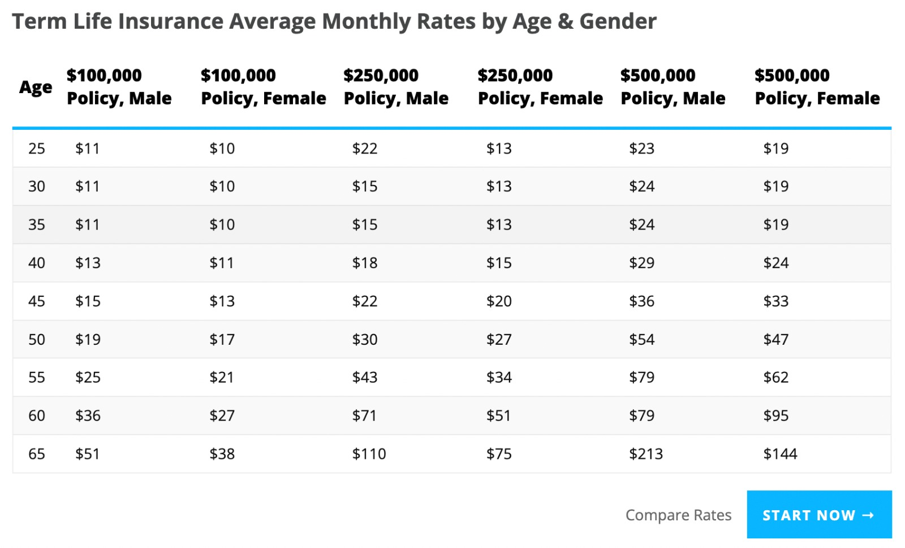

Understanding the Affordable Care Act (ACA)
The Affordable Care Act (ACA) Marketplaces provide individual and family insurance provided through private companies with subsidies to help people afford the premiums. The law that created the Marketplaces also included many insurance reforms, including protections to ensure coverage for people with pre-existing conditions like epilepsy and an end to lifetime and annual dollar limits on coverage, and the option for states to expand their Medicaid programs.
The ACA has helped get many more Americans with the epilepsies covered. In 2010 and 2013, prior to the ACA being fully implemented, 17.7% of adults aged 18-64 living with active epilepsy were uninsured. After the ACA went into effect, in 2015 and 2017, the rate of uninsured adults living with active epilepsy dropped to 7.3% (National declines in the percentages of uninsured among adults aged 18–64 years with active epilepsy, 2010 and 2013 to 2015 and 2017—U.S. National Health Interview Survey, Kobau R., Sapkota S., Koh H.K., Zack M.M. (2019) Epilepsy and Behavior).
Medicare Part A
Medicare Part A covers a person’s hospital stays, for example, after a seizure. It may also provide coverage for certain epilepsy surgeries, such as removing portions of brain tissue known to cause seizures. However, in these cases, the amount of coverage is decided on a per-case basis.
Medicare Part B
Medicare Part B generally covers doctor visits and diagnostic treatments when medically necessary. A person may have to cover copays, coinsurance, and deductibles.* A neurologist may recommend diagnostic testing, such as an MRI scan or EEG, to monitor a person’s epilepsy.
Some people with epilepsy may choose to enroll in a Medicare Advantage plan because of the availability of Special Needs Plans (SNPs) for neurologic disorders such as epilepsy. SNPs offer expanded coverage, including more prescription medications and medical specialists. However, SNPs are region-specific, and a person with epilepsy may need to check if they are available in their area.